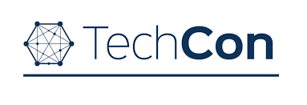
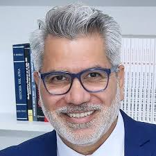

Our History
TechCon began in 2010 as a small developer meet-up and has since grown into one of the leading global technology conferences. With each year, TechCon brings together industry pioneers, innovators, and learners to shape the future of tech.

Our Mission
TechCon’s mission is to empower the global tech community through connection, collaboration, and knowledge-sharing. We are dedicated to promoting innovation, inclusivity, and education across all sectors of technology.
Notable Past Speakers
Dr. Jane Smith

Dr. Jane Smith is a leading figure in artificial intelligence research. She spoke on ethical AI development and inclusive innovation in 2022.
Alan Rivera

Alan Rivera has been a pioneer in cloud architecture. At TechCon 2021, he shared insights on multi-cloud infrastructure strategies.
Maria Cheng
Maria Cheng is renowned for her cybersecurity work in both public and private sectors. She spoke about data protection trends in 2023.